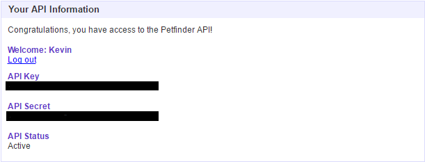

Creating an Account
The first thing we must do is create an account with Petfinder. After you've made an account, you will be given an API Key and an API Secret like shown below (except with a string of random letters and numbers).
The API Key is a unique identifier which tells Petfinder who is requesting information from them. If you have a valid key and an active API status, then you will be granted permission to receive data. The API Secret is an additional unique identifier that is required for only certain types of data which we will discuss shortly.
Available Information
Before we jump into the gritty details of how all of this works, let's talk about some of the information that is available to pull from Petfinder. For each adoptable pet we can get that pet's:
- Name
- Photo
- Size
- Breed
- Age
- Location
- Description
This information and more can be generated based on search criteria like Huskies only, all cats in my zip code, or even a single random pet from anywhere. This is all available from just an activated API Key. The only time you would need to use the API Secret is if you wanted to get the records of a shelter. To do this you will need to attach a signature to the end of your query. This signature is generated by creating an MD5 hash of the concatenation of your API Secret and the arguements of your request. We won't be requesting shelter records in this guide, but you can read more about Petfinder's API security methods here.